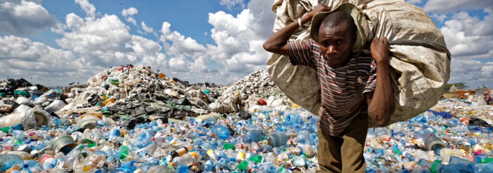

Wednesday , 21 Agu 2024
Innovative Approaches in Plastic Waste Management: A Step Towards Sustainability
The challenge of plastic waste is daunting, but our vision to transform discarded plastics into valuable resources is paving the way for a more sustainable future. By focusing on materials such as PET, polypropylene, and various density plastics, we are reimagining waste and driving progress in the packaging industry.
Understanding the Plastic Waste Challenge
Plastic waste, particularly from materials like PET and polypropylene, poses severe environmental issues. The accumulation of these plastics in landfills and natural habitats disrupts ecosystems and contributes to pollution. Traditional recycling methods often fall short, highlighting the need for advanced solutions.
Repurposing Plastics: The Vision in Action
Our approach to managing plastic waste involves innovative technologies that transform these materials into new, usable products. Through advanced sorting, cleaning, and processing, discarded plastics are converted into high-quality materials that can be reintegrated into the manufacturing process. This not only reduces the volume of waste but also mitigates the environmental impact of producing new plastics.
Impact on the Packaging Industry
The shift towards using repurposed plastics has significant implications for the packaging industry. By incorporating recycled materials into packaging products, companies can reduce their reliance on virgin plastics and lower their carbon footprint. This approach aligns with the growing demand for sustainable packaging solutions and contributes to a circular economy.
Looking Ahead
Achieving a sustainable future requires continuous innovation and collaboration. By investing in advanced recycling technologies and supporting policies that encourage plastic waste management, we can drive meaningful change. Our vision of transforming plastic waste into valuable resources is not just a goal but a step towards a more sustainable and eco-friendly world.